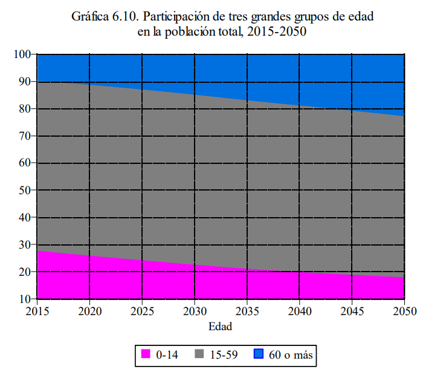

De acuerdo a la Comisión Económica para América Latina y el Caribe (CEPAL) entre los indicadores demográficos dedicados al envejecimiento tenemos.
ÍNDICE DE ENVEJECIMIENTO DE LA POBLACIÓN (O RELACIÓN VIEJOS/JÓVENES): Es el cociente entre la población 65 años y más y la población de menores de 15 años de edad. En estudios sobre envejecimiento poblacional suele utilizarse como el cociente entre la población 60 años y más y la población de menores de 15 años de edad
RELACIÓN DE APOYO POTENCIAL: Es una alternativa numérica para expresar la relación entre las personas potencialmente económicamente activas y las personas potencialmente dependientes. Es el cociente entre la población entre 15 a 59 años de edad y la población de 60 años y más, o sea, la inversa de la relación de dependencia de la población de 60 y más años de edad.
RELACIÓN DE DEPENDENCIA (DEMOGRÁFICA): Es la medida comúnmente utilizada para medir la necesidad potencial de soporte social de la población en edades inactivas por parte de la población en edades activas. Es el cociente entre la suma de los grupos de población de menos de 15 y de 65 y más años de edad y la población de 15 a 64 años de edad. En estudios sobre envejecimiento poblacional suele utilizarse como el cociente entre la suma de los grupos de población de menos de 15 y de 60 y más años de edad y la población de 15 a 59 años de edad.
RELACIÓN DE DEPENDENCIA DEMOGRÁFICA DE LA POBLACIÓN DE 60 Y MÁS AÑOS DE EDAD: Es la medida utilizada para medir la necesidad potencial de soporte social de la población de adultos mayores por parte de la población en edad activa. Es el cociente entre la población de 60 y más años de edad y la población de 15 a 59 años de edad.

Hay países que ya tienen una mayor proporción de personas de 60 años y más que de niños
menores de 15 años. El índice de envejecimiento empieza a ser mayor de uno.
El comportamiento de este índice nos da idea de las demandas sociales por lo que es un elemento clave para el diseño de políticas públicas como el intercambio de servicios de guarderías por asilos, de escuelas por casas de día.
CEPAL Indicadores demográficos
https://repositorio.cepal.org/bitstream/handle/11362/44369/1/S1800629_es.pdf